Episode 137: ImaNewbie and the Magic Halberd. This week ImaNewbie is exploring on Ice Island when he comes across the body of a freshly killed Frost Troll. Wondering if the corpse has be looted, he steps up to take a closer look.
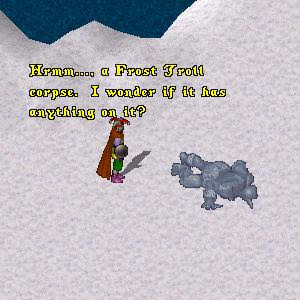
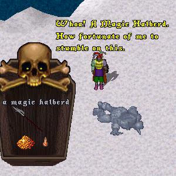
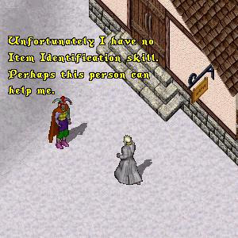
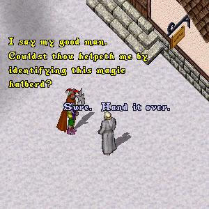
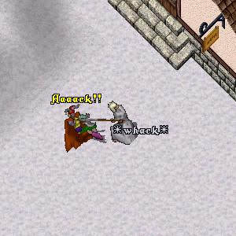
After a quick trip to the healer, ImaNewbie
once again decides to ask a passerby for help
in identifying the magic halberd.
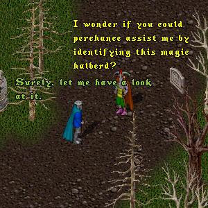
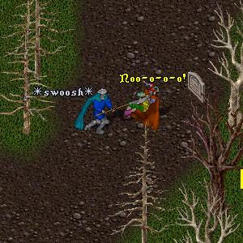
Puzzled by the reaction of the first two
people he requested to identify the halberd,
ImaNewbie becomes more determined than
ever to have it identified and begins asking
everyone he meets.
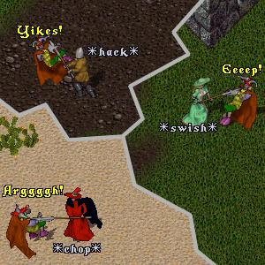
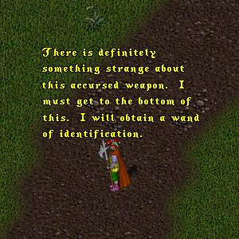
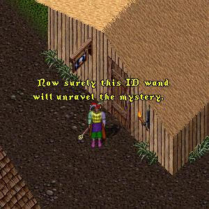
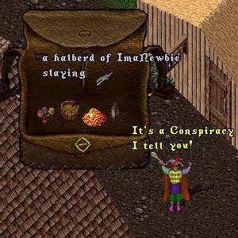
I wonder if Electronic Arts might have slipped that halberd into the weapons inventory to punish Ima for the less than sparkling reviews he has been giving UO3D? Stay 'tooned...